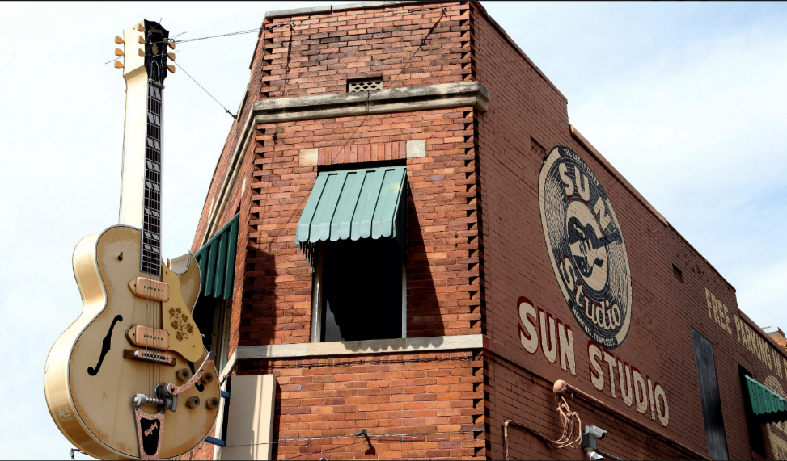
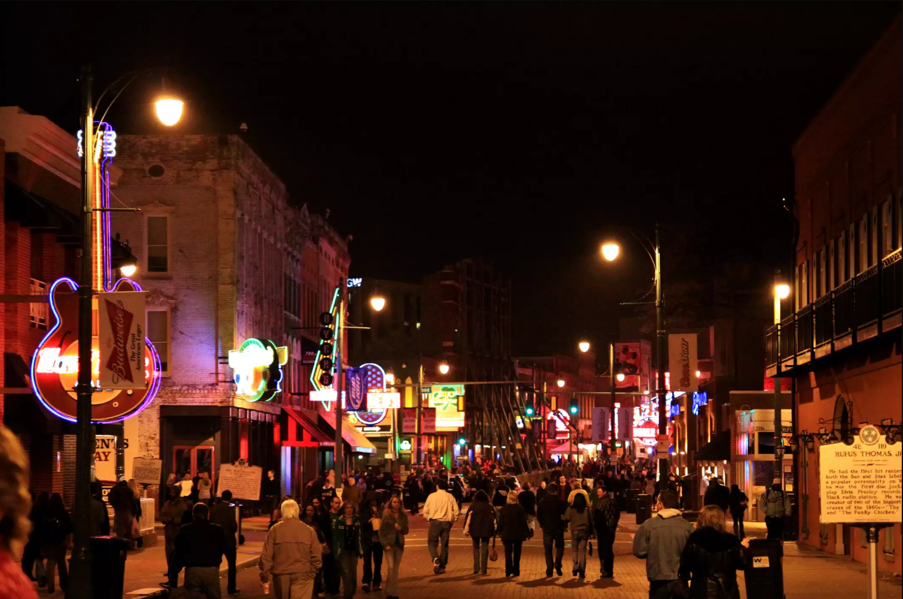

The Story Behind Cohn's "Walking in Memphis" Hit Song
Song Lyrics Name Popular Sightseeing Spots in Memphis and the Area
BY TERESA R. SIMPSON Updated | 06/26/19


Richard I'Anson / Getty Images
The 1991 hit song "Walking in Memphis" originally by singer and songwriter Marc Cohn poetically recalls his first visit to Memphis—the taproot for some of his treasured, influential musicians like Al Green, Elvis Presley, and Isaac Hayes.
The song embodies a lot of the spirit and character of the city. If you're passing through or spending leisure time in town, lines from the song point out great things about Memphis and some potential sightseeing spots.
The Inspiration for the Song
The story goes that Cohn was having a dry spell coming up with his signature music and lyrics. He was inspired by masterful singer and songwriter James Taylor who had said that he broke his writer's block by going somewhere he'd never been and then got inspiration from that experience. Memphis was just the place for Cohn.
As you learn from the song, Cohn did touristy things like visited Graceland but also asked friends for more obscure, off-the-beaten-path suggestions, which resulted in a visit to the Full Gospel Tabernacle Church and the Hollywood Cafe in Robinsonville, Mississippi.

Raymond Boyd/Getty Images
References to Elvis and Sightseeing Spots
Cohn makes quite a few references in the lyrics about Elvis. Cohn says he regrets this in hindsight because the song was not meant as an homage to Elvis. He wrote the song as an embodiment of his experience in the city as a whole. Take a look at the Elvis mentions and some locations you might want to check out during a visit to Memphis.
- Sun Studio: In the first line of the song, Cohn mentions blue suede shoes, a reference to the rockabilly song "Blue Suede Shoes" that was originally recorded by Carl Perkins and made famous by Elvis Presley. Elvis recorded “Blue Suede Shoes” for Sun Records in Memphis. Sun Studio on Union Avenue was declared a National Historic Landmark in 2003 and is now open to tourists.
- Brothers: You can purchase a pair of blue suede shoes from Lansky Brothers, "the Clothier to the King," in downtown Memphis. There are two locations. One is on Beale Street and the other inside the Peabody Hotel. The Lansky family was one of Elvis' first stylists; they were responsible for the glitzy looks he became known for.
- Avenue: The reference to the "Ghost of Elvis on Union Avenue" was timely when Cohn wrote the song. When Cohn visited Memphis in 1986, Elvis had been dead nine years. At the time, there had been many conspiracy theories swirling about Elvis, including that he or his ghost has been sighted around the world. Union Avenue is a major thoroughfare for car traffic in Memphis that leads to Graceland. There is a misconception that the street is named after the Union Army. It was actually named in reference to the unification of different areas of the city early in Memphis' formation.
- Graceland: Cohn mentions the "gates of Graceland" and Elvis' "tomb." Graceland was the mansion that was Elvis Presley's home and today is open for visitors from around the world. It is also where Elvis is buried. The gates of the property have a distinctive metal design with music notes and guitar players. One of the more famous rooms in Graceland, the Hawaiian-styled "Jungle Room" is known for the deep green shag carpet and tropical decor including carved wooden furniture. Also, this room served as one of Elvis' final audio recording rooms.

Douglas Sacha/Getty Images
References to Blues Music and Sightseeing Spots
Memphis is referred to in the song as the "land of the Delta Blues." Delta blues is a style of blues music that originated in the Mississippi Delta in the early 1900s. Memphis is generally considered the northern boundary of this geographic area. You can visit the Delta Blues Museum in Clarksdale, Mississippi, about 75 miles south of Memphis.
- Street: Beale Street has been designated by Congress as the "Home of the Blues." It gained notoriety in the early 1900s as an entertainment district with restaurants and clubs. Today, the nearly 2-mile-long street is a major tourist destination in Tennessee.
- Handy Park and Statue: W.C. Handy was named in the song. Handy was a blues musician, composer, and a pioneer of the genre. He performed on Beale Street with his band in the early 1900s and wrote the song "Memphis Blues," which originally was a campaign song for mayoral candidate Edward Crump. W.C. Handy Park is a city park on Beale Street; there is a bronze statue of Handy there.
References to Gospel Music and Sightseeing Spots
The Reverend Al Green is named in Cohn's song, too. Green is a Memphis-based soul singer and songwriter who later recorded gospel music and became an ordained minister. This Rock and Roll Hall of Famer was a major influence for Cohn.
- Full Gospel Tabernacle Church: Cohn was told if he wanted to get the full gospel experience in Memphis he should visit the Full Gospel Tabernacle Church led by one of his favorite rhythm and blues singers, the Reverend Al Green. The church is still run by Green, and he sometimes will lead a service. Don’t bother calling to see if Green is going to be present for any particular service—the church won’t tell you, often because they’re not sure themselves. Sunday morning services start late, at 11:30 a.m. Visitors are welcome.
- Hollywood Cafe: "Muriel at the Hollywood" is a reference to a small southern food greasy spoon in Robinsonville, Mississippi, about 30 miles south of Memphis, where a gospel singer named Muriel performed frequently. There's more to this story, but the basic rundown is a friend recommended that he check out this retired school teacher. He did, got on stage, and played along even though the two didn't share a common songbook.
In "Walking in Memphis," the song culminates with the iconic lyric, "'Tell me are you a Christian, child?' and I said, 'Ma'am, I am tonight!'" That night Cohn, who was born Jewish, did not become a Christian or born again but implies he had a "come to Jesus" moment when he performed with Muriel on stage at the Hollywood Cafe.